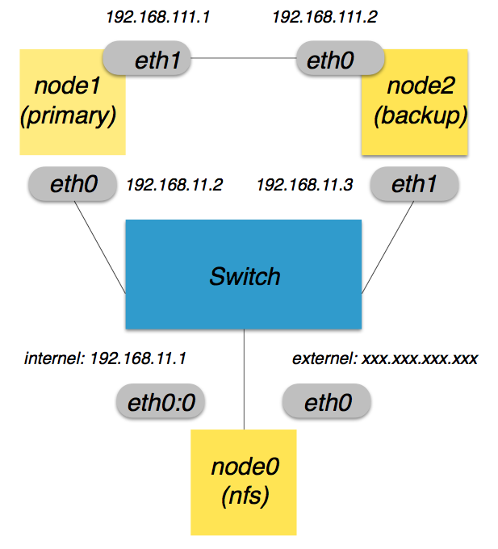

Cuju Start Guide
The environment prepare
- Assume you have already builded 3 nodes (nfs, primary and backup node).
- A recommended topology
below

- Open the Intel virtualization support (VT-x) in your bios.
- Install OS: Ubuntu 16.04 LTS (Linux kernel 4.4.48)
- Change your current Linux config
- Download Linux-4.4.48 source
$ cd linux-4.4.48
$ cp /boot/config-'uname -r' ./.config
$ make menuconfig
Disable following item:
Processor type and features
[ ] x86 PAT support
Kernel hacking
[ ] Filter access to /dev/mem
Set Up the Bridge and network environment
- You can follow our recommended topology to set up the network environment
- The example of network interfaces set up below (edit your /etc/network/interfaces):
#NFS node
auto lo
iface lo inet loopback
auto eth0
iface eth0 inet static
address 10.1.10.10
netmask 255.255.255.0
gateway 10.1.10.254
dns-nameservers 8.8.8.8
auto eth1
iface eth1 inet static
address 192.168.11.1
netmask 255.255.255.0
dns-nameservers 8.8.8.8
#Primary node
auto lo
iface lo inet loopback
auto br0
iface br0 inet static
bridge_ports eth0
bridge_maxwait 0
address 192.168.11.2
netmask 255.255.255.0
gateway 192.168.11.1
dns-nameservers 8.8.8.8
auto eth0
iface eth0 inet static
address 0.0.0.0
auto eth1
iface eth1 inet static
address 192.168.111.1
netmask 255.255.255.0
#Backup node
auto lo
iface lo inet loopback
auto br0
iface br0 inet static
bridge_ports eth0
bridge_maxwait 0
address 192.168.11.3
netmask 255.255.255.0
gateway 192.168.11.1
dns-nameservers 8.8.8.8
auto eth0
iface eth0 inet static
address 0.0.0.0
auto eth1
iface eth1 inet static
address 192.168.111.2
netmask 255.255.255.0
- Build the high-speed connections with Primary and Backup nodes by the eth1
- After editing these network interfaces, type "/etc/init.d/networking restart" or reboot
Set up forwarding and iptable in NFS node
- NFS node: eth0 as outside interface; eth1 as inside interface
Install the NFS service (Network FileSystem) in NFS node; then create a NFS forder placing the VM image
$ sudo apt-get install nfs-kernel-server
- Insert this line in "/etc/exports" to add your NFS forder:
/home/[your username]/nfsfolder *(rw,no_root_squash,no_subtree_chec
k)
Install the NFS client in Primary and Backup nodes; then mount the NFS forder
$ apt-get install nfs-common
$ mount -t nfs 192.168.11.1:/home/[your username]/nfsfolder /home/[
your username]/data
In NFS node, go to your nfs forder, then download
Cuju
and build a VM image file (or download our Ubuntu-16.04 VM image file), they will be synced with Primary and Backup node.
Cuju Install
- In primary node, go to your Cuju path
$ ./configure --disable-pie --enable-kvm --enable-cuju
--target-list=x86_64-softmmu --enable-trace-backend=simple
$ make clean
$ make
$ cd cuju-kvm-mod
$ ./configure
$ make clean
$ make
Cuju Testing Steps
- Download necessary scripts:
ft-scripts.tar.gz
- Uncompress to your work path
- Seven scripts in it: pre.sh, reinsmodkvm.sh, set-net2.sh, set-vmft.sh, ftmode.sh, run_ft and recv
- Before you launch VM in any node, run pre.sh both in primary and backup node.
- execute ./run_ft in primary node to boot the VM
- execute ./recv in backup node to boot the backup VM
- execute ./ftmode.sh in primary to enter FT mode
- Remote to VM and ping 8.8.8.8 or any online server
- Kill the VM in primary node
- Check if the connection of VM and its ping action is still alive or not